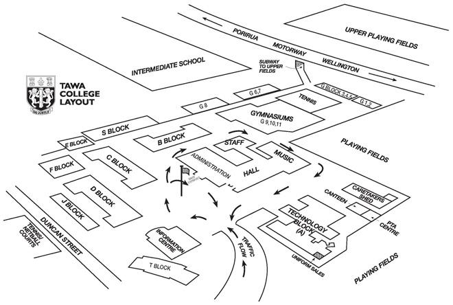
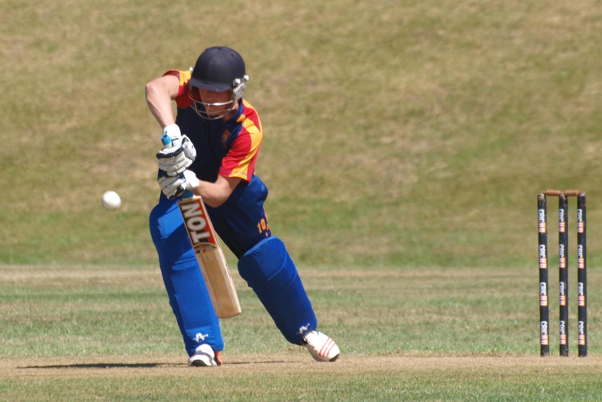

tawa College

Our College
"Do Justly"
We are a co-educational state secondary school of around 1450 students, 100 teaching staff and 45 support staff. The students are drawn largely from the area of Tawa which itself has a broad socio-economic mix. In that sense it is a microcosm of New Zealand society. Tawa College was officially opened in July 1961 and has always maintained a close involvement with the life of the local community, particularly through music and sport. With the support of our community we aim to provide a challenging, balanced education which strongly promotes achievement and preparation for life long learning through the development of students' intellectual abilities, personal maturity and social responsibility.
History
Establishment
The land on which Tawa College stands is part of Section 48 of the Porirua District, surveyed by the New Zealand Company in the early 1840s. Section 48 was the farm of William Best from 1856 till 1865, which he called Grasslees, after the Best family farm In Northumberland, England. His son, Elsdon Best, Tawa's most famous scholar, was born there in 1856. Eventually, in 1925, the Government purchased Section 48 as part of the land needed to allow for the Tawa Flat Railway Deviation to be built. It replaced the original steep and winding railway line which ran from Tawa Flat through Johnsonville to Wellington. Once the Deviation was completed in 1937, some of Section 48 was sold to a local farmer, while 26 acres were retained by the Government on which to eventually build a Post Primary School. The rest makes up today's Grasslees Reserve.
Growth
E M P Flaws, MA, Deputy Principal at Mana College, was appointed to the vacancy left by Mr. Mackie. It fell to him to guide the College through a decade or more of roll growth. Tawa was still a growing suburb, and in 1966 had 9852 residents.
In that same year it was one of only two secondary schools in the Porirua Basin, so it drew students from Porirua East in the east to Pukerua Bay in the north to Glenside in the south.
The building of Porirua College in 1968 eased some pressure, but the roll burgeoned to 1450 or more by the mid-1970s. Aotea College offered further relief when it opened in 1976.
Mr. Murray Lucas, M Sc, became the first past pupil to be appointed as the Principal of Tawa College. Leaving the school at the end of 1970, he took a degree at Victoria University, gained his teaching qualification, and returned to his alma mater as a Science and Mathematics teacher in 1976.
Thereafter, he taught at Naenae College and Hutt Valley High School before appointment as Deputy Principal at Horowhenua College in 1996, and then as the Principal from 2000. He re-joined the Tawa College staff as Principal in Term 2, 2002.
Meet the Principal
Murray Lucas, M Sc
"The large majority at the College "Do Justly" and do the best that they can in all that they do, and
I gain a large measure of satisfaction from witnessing the personal growth of these quality students. The College continues to be in good heart.
As the Principal I am proud of the achievements of our students, whether it be academically, culturally, socially or sportswise. Tawa College students
participate wholeheartedly in all that the school offers. Students here enjoy coming to school. The Education Review Office (ERO) Report published in
October 2012 was full of praise for the College. It is excellent to receive such positive endorsement from an objective source..."
Sincerely,
Murray Lucas
Principal
Our Values
At Tawa College we believe in the following values:
Excellence and inclusive participation
High academic standards and good vocational skills
Music, other cultural and sporting experience
Safety of students and staff
High standards of behaviour and appearance
Good care of the campus environment
Service to, care and support of others
Partnership with parents and community
Restorative Practices
New Zealand Schools are undergoing a huge shift in how they deal with young people and help them to engage with adults and learning in a positive way. The restorative practices that we follow at Tawa College helps us to achieve those goals.
Learn more about how Restorative Practices are implemented at Tawa College.
Sports, Arts and Music
Sports
Approximately 60% of students participate in at least one code. College teams participate in all sports organised in the Wellington-Porirua areas.
Arts

Tawa College gives great importance and value to the artistic talents of our students and encourages them to follow their passion along with their academics.
Music
.jpg)
Tawa College provides an opportunity for participation in choral music through the all-comers Dawn Chorus, auditioned choirs like Blue Notes, and barbershop groups.